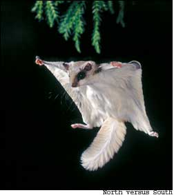
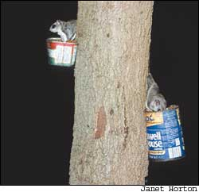
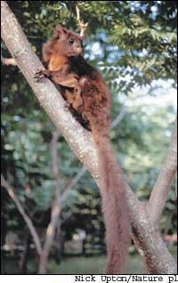
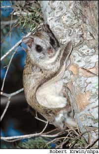
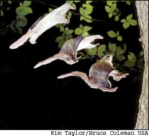
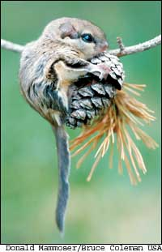

Take an ordinary gray squirrel, shrink it down to about the size of a large chipmunk, equip it with night-vision goggles and a cape, and you’d have a pretty good approximation of not only Rocky the cartoon flying squirrel, friend of Bullwinkle, but Glaucomys the real flying squirrel, friend of woodland and suburban ecosystems throughout much of North America.
That you’ve probably seen Rocky far more often than you’ve seen a real flying squirrel is not so much a comment on our popular culture as it is the flying squirrel’s sleeping habits - or, more accurately, ours. Between the twilight hours of dusk and dawn, while we diurnal humans sleep, ebony-eyed flying squirrels glide the night skies like flat, furry leaves, flinging themselves from tree to distant tree in search of food or - according to some observers - just for the fun of it. By the time we wake up, blinking our eyes to the light of a new day, the night shift has ended and flying squirrels have hunkered down in bark-lined tree cavities or stick-built dreys for a long day’s sleep.
So it is that few of us think “flying squirrel” when we think of backyard wildlife. Yet in much of the United States and Canada, in suburban back yards as well as in deep forests, wherever there are mature trees, there are flying squirrels - often in greater numbers than the other tree squirrel species we commonly see during the day.
Worldwide, there are more than 40 species of flying squirrels. Most of them are in Asia, where in the southeastern part of the continent you might catch a glimpse - and it would be a startling one - of one of the largest flying squirrels of them all: the yard-long and russet-furred red giant.
In North America, there are just two species of flying squirrels, both of which are reassuringly more diminutive. The northern flying squirrel (Glaucomys sabrinus; shown above) averages 11 inches - about as long as this page - from the tip of its sensitive whiskered nose to the end of its 4- to 5-inch-long tail. It weighs just 4 to 6 ounces, or about half the weight of a typical day-roaming red squirrel. The southern flying squirrel Glaucomys volans; is the smallest of all tree squirrels, measuring only 9 inches long and weighing a mere 2 to 3 ounces - half the weight of its Yankee cousin.
Aside from their noticeable size difference, both species look remarkably alike: They have soft, light- to deep-brown fur; a creamy-white underbelly; huge, dark eyes; and short, rounded ears. Unscientifically speaking, each species is as cute as a button.
Their most significant differences are in their habits and habitats. The northern flying squirrel is truly northern; it lives in much of Alaska; coast-to-coast throughout the lower two-thirds of Canada; and down into the United States from New England, west to New York and across the northern portions of Pennsylvania, Michigan, Minnesota and Wisconsin. Farther west, it inhabits much of Idaho, Oregon and Washington. Its range also extends down the cool-climate boreal spines of the Rockies to Colorado, the Sierras through most of California, and in scattered populations in the Appalachians from West Virginia to western North Carolina.
Despite its Dixie-esque name, the southern flying squirrel ignores the boundaries of the Mason-Dixon Line entirely and ranges throughout the whole eastern half of the United States from New England to Florida and west all the way to the eastern edge of the Great Plains and into central Texas.
Like all members of the squirrel family (Sciuridae), both northern and southern flying squirrels are nuts about nuts. But as a native of northern coniferous forests and high-elevation habitats where nut-bearing hardwoods are all but nonexistent, the northern flying squirrel relies mostly on a diet of lichens and fungi. It’s especially fond of underground truffles, which it digs up from the forest floor and devours on the spot.
Southern flying squirrels also eat lichens and fungi, but in their neck of the woods deciduous trees reign supreme, so nuts - particularly hickories and acorns - make up the better part of their diet. Both species also eat other foods, including a variety of berries, seeds, fruit and - brace yourself if you’ve been charmed by these critters’ innocent looks - fresh meat. Flying squirrels are the most carnivorous of all tree squirrels and conduct nighttime aerial raids in search of eggs, nestling birds and infant mice and voles.
Of course, what intrigues humans most about flying squirrels is their ability to do what we can only attempt - with varying degrees of failure - to imitate: fly though the air with the greatest of ease. Never mind that flying squirrels don’t actually fly (a feat limited among mammals to bats), but instead glide. If as a child you wrapped a blanket “cape” around your shoulders and leaped off a bed, chair or garage roof (what were you thinking?), you know too well that gliding from point A to point B without breaking point C - any one of your bones - is no easy feat. Even if you never stopped trying to fly and now are among those thrill-seeking skydiver types who leap out of planes or off yawning precipices - the truth is you and your parachute still don’t measure up to the flying squirrel’s aerial abilities.
The basic mechanism behind - or, rather, beneath - the animal’s aeronautic engineering is a loose, fur-covered flap of skin called a patagium that extends along each side of its body from front ankle to rear ankle. Coming out to commence its nocturnal, tree-to-tree travels in search of food, the flying squirrel flings itself from a branch and plummets earthward to gather speed, then spreads all four legs apart, stretching out the flaps of skin. The result is a flat, squarish “wing” surface that extends continuously from its feet on one side and across its belly to the feet on the other side. Picture a tiny, furry flying carpet with a head in front, a tail behind and a foot at each corner.
Now in a glide, the animal steers right or left toward its destination - usually a tree trunk - by raising or lowering its “arms” and leaning, like a child imitating Superman. Its flat tail serves as a stabilizer, much like the tail on a kite. Hardly limited to a straight descent, the flying squirrel can veer right or left, or even spiral 180 degrees, to maneuver around trees, limbs or other obstacles.
As it approaches its destination, the little squirrel may be traveling between 5 and 10 mph (some have been clocked at 30 mph). To brake, it raises its forepaws and the front of its flat “wing,” much like a cancan dancer lifting her skirt, and lands vertically with a click of grasping claws. Immediately, the little squirrel scampers to the other side of the trunk - an instinctive defense mechanism to avoid owls and other predators. From there, the rodent may run to the ground to dig for food, or climb upward and continue its journey to the next tree and the next, sometimes running along limbs, more often jumping and gliding.
Just how far can a flying squirrel fly in a single bound? Most flights are relatively short, between 30 and 80 feet, but glides of 150 to 200 feet aren’t uncommon. Logistically, it all depends on the height from which a squirrel jumps. Upon encountering flying squirrels in the New World in 1743, the English naturalist/explorer Mark Catesby got it about right when he wrote in his journal:
“When I first saw them, I took them for dead Leaves … They will fly fourscore Yards from one Tree to another. They cannot rise in their Flight, nor keep in a horizontal Line, but descend gradually, so that in Proportion to the Distance the Tree they design to fly to is from them, so much the higher they mount on the Tree they fly from.”
Just why flying squirrels glide rather than perambulate on terra firma is likely a matter of energy economics - and survival. The squirrels don’t store energy as fat, so they must forage for food more or less continually during their waking hours. Gliding is a faster and more energy-efficient way to move between widely scattered food sources. For its size, a flying squirrel can cover a lot of ground in a few hours of foraging - far more than it could on foot. What’s more, traveling by air at night is simply safer for a little squirrel - especially for one with baggy pants. Because of its floppy patagium, a flying squirrel isn’t able to run much better on the ground than you can in a sack race. In the air, however, it is a swift and elusive target.
Gliding prowess and nocturnal habits notwithstanding, flying squirrels are largely defenseless and hardly immune to hungry predators. Martens, weasels, foxes, raccoons, snakes, bobcats and hawks all take a toll. Owls, though, are by far their deadliest enemies. According to one estimate, a pair of northern spotted owls consume as many as 440 flying squirrels a year. In the Pacific Northwest, northern flying squirrels account for at least half of a spotted owl’s diet. Southern flying squirrels also are considered a critical food source for owls and other woodland wildlife in much of their range.
Even more important, many ecologists say, is the role flying squirrels play in the dispersal of spores of mycorrhizal fungi - various species of underground fungus, such as truffles, that not only serve as a major food source for the squirrels, but also maintain a vital symbiosis with forest trees. The subterranean fungi’s far-reaching threadlike roots, or hyphae, penetrate tree rootlets and transfer water, minerals and nutrients to host trees, in effect acting as an extension of the trees’ own root systems. Some mycorrhizal fungi also protect trees from disease pathogens.
When a flying squirrel consumes a truffle or other fungus, spores pass unharmed through the animal’s digestive tract, combining and fermenting with other ingredients in the animal’s diet, and come out compressed in pellets that contain not only spores, but also nitrogen-fixing bacteria and growth-stimulating yeast: forest food concentrate. More often than not, the pellets are conveniently deposited beneath trees, where they ensure the continued colonization of fungi and, as a result, longer life spans for their hosts.
In some forests, flying squirrels are so overwhelmingly important to this cycle, and so predominant as a food source to wildlife, that they’re considered a keystone species - without them, the local ecosystem would be drastically altered. In many areas, biologists now use flying squirrel populations as a measure of a woodland habitat’s overall health.
The secretive flying squirrel, it seems, is much like the roots beneath the trees it inhabits and nurtures: unseen and thus underappreciated by out-of-sight, out-of-mind humans, but nonetheless critical in nature’s grand scheme.
If you live within the range of either North American flying squirrel species and are willing to sacrifice a little sleep, you just might get lucky and catch a glimpse of one in your back yard. Here are some tips:
• Look for cavity nests during the day and make a mental note of their locations. Flying squirrels favor old woodpecker holes in trees between 12 and 16 inches in diameter.
• Watch especially at dusk and dawn. Although flying squirrels can forage at any time of night, they’re especially active in the hours just after sunset and just before sunrise.
• Give your “night eyes” time to adjust. The human eye needs at least 30 minutes away from bright light to optimally see movement and basic shapes in dim light. Spend some time stargazing before you really start looking for flying squirrels.
• Listen for chirping noises in the trees. Northern and southern flying squirrels sometimes make low chirps and soft clucking sounds at night.
• Knock on the door. Flying squirrels are curious and will sometimes peek out of their nests if you knock lightly on their tree with a stick. (Use this technique sparingly.)
• Keep an eye on your bird feeders at night. Flying squirrels are known to visit seed-filled feeders for a meal under the stars. You may think you’ve foiled your neighborhood’s pole-climbing, feeder-raiding daylight squirrels, but to Glaucomys, those feeders are just a glide away.
• Don’t be disappointed if you fail to see a flying squirrel. Like so many other things in nature, seeing them isn’t as important as simply knowing that they share our world. Besides, if you take the time to watch for flying squirrels after dark, you’re sure to witness some of the dozens of other fascinating members of the wildlife night shift. Among those you’re likely to glimpse are bats, owls, mice, moths, opossums, night crawlers, crickets and fireflies.
|
 Northern flying squirrels eating nuts from a feeder in Pennsylvania. |
 One of the world?s largest flying squirrels, the yard-long Asian red giant. |
 A northern flying squirrel. Note the patagium, the flap of skin that functions as the squirrel?s ?wings.? |
|
 This time-lapse photo shows a southern flying squirrel moving from full glide to a landing position. |
 The diminutive southern flying squirrel can be found throughout the eastern United States and west to the eastern edge of the Great Plains. |
 |